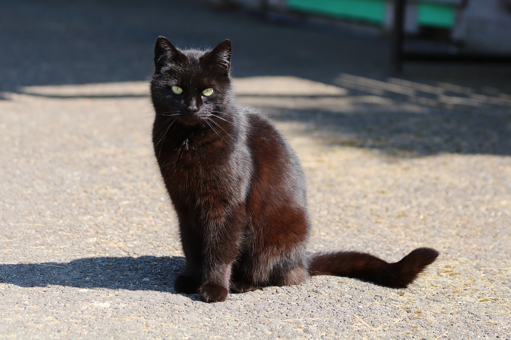

本当に美味しい珈琲を提供してお客様に喜びを
葵珈琲は、毎日自家焙煎したこだわりのコーヒーと、美味しいFOODやSWEETSを、最高の空間とおもてなしで提供する自家焙煎のカフェです。築
25年の無機質なコンクリートの建物をリノベーションした広い店内は、どこか懐かしく、どこか新しいこだわりの空間。そんな非日常的な雰囲気の中、美味しいコーヒーを呑みながらそれぞれのスタイルで安らぎの一時をお楽しみください。コーヒーを軸にたくさんの何かに出会える、地域に必要とされる場を私たちは目指しております。
店舗名の由来

当店では自家焙煎したコーヒーをサイフォンで抽出します。このサイフォン、支配人が何年も探してやっと満足のいく機材に巡り合えました。当店が使うサイフォンは広島県三原市にお住まいの職人さんのこだわりで作られたオーダーメイドなのです。その職人さんが大切にしている飼い猫がいます。真っ黒の被毛に大きな黄緑がかった眼をしたその猫の名前は葵（あおい）。店舗オープンにあたり、その名をお借りしました。店舗に猫の雑貨が多いのは、黒猫にあやかっているのです。